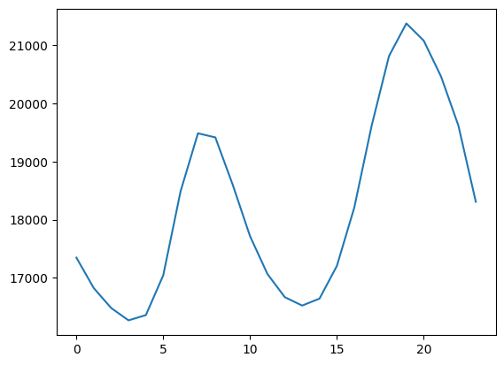
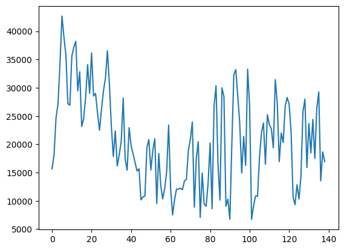

Data og modeller#
For å koble data til modeller skal vi bruke python-bibliotekene pandas og numpy, for å lage datadrevne modeller.
Datasettet kan lastes ned her:
Dataene er lastet ned fra Statnetts side Tall og data fra kraftsystemet og viser timesbaserte verdier av produskjon og forbruk av elektrisk kraft fra 01.01.2026 til 20.05.2026.
Tidligere har vi brukt numpy og pandas seperat, først numpy til å lage en typisk døgnprofil og deretter pandas til å lese data.
Nå skal vi kombinere de til å finne en representativ dag i den angitte dataperiosen fra 01.01.2026 til 20.05.2026.
Index - datetime#
Vi vil finne den mest representative døgnprofilen i datasettet og vi ser nå styrken til Datetimeindex, ved at vi kan lage en døgnmatrise. Vi har tidliger sett at vi kan hente ut tidsforståelse direkte ved Datetimeindex. Vi kan legge til dette som en kolonne i vår dataframe ved å bruke tilegge df.index.date et df['kolonnenavn']:
import numpy as np
df['date'] = df.index.date
print(df.head(3))
Production Consumption date
Time(Local)
2026-01-01 00:00:00+01:00 18448,59 16662.95 2026-01-01
2026-01-01 01:00:00+01:00 18693,66 14953.24 2026-01-01
2026-01-01 02:00:00+01:00 18639,68 14298.07 2026-01-01
Vi har nå fått en egen kolonne som gir oss datoen eksplisitt. Deretter kan vi gruppere data etter dato og samle alle “Consumption”-verdier per dag i en liste.
daily = df.groupby('date')['Consumption'].apply(list)
print('Daglige tidsserier:',daily.head(4))
Daglige tidsserier: date
2026-01-01 [16662.95, 14953.24, 14298.07, 13254.81, 12678...
2026-01-02 [14821.37, 13826.33, 12743.11, 12786.86, 12647...
2026-01-03 [22115.9, 21572.64, 20710.6, 20344.44, 19724.8...
2026-01-04 [23251.09, 22995.68, 22691.57, 22255.31, 21886...
Name: Consumption, dtype: object
Vi får tilbake en pandas Series hvor hver verdi er en Python-liste
print(type(daily))
len(daily)
<class 'pandas.core.series.Series'>
140
Beholder kun komplette døgnlastprofiler, kun de seriene som har 24 timesverdier
daily = daily[daily.apply(len) == 24]
print(daily.head(4))
len(daily)
date
2026-01-01 [16662.95, 14953.24, 14298.07, 13254.81, 12678...
2026-01-02 [14821.37, 13826.33, 12743.11, 12786.86, 12647...
2026-01-03 [22115.9, 21572.64, 20710.6, 20344.44, 19724.8...
2026-01-04 [23251.09, 22995.68, 22691.57, 22255.31, 21886...
Name: Consumption, dtype: object
139
Vi gjør om til matriseverdier ved .values
print(daily.values[0:2])
[list([16662.95, 14953.24, 14298.07, 13254.81, 12678.51, 12706.47, 12967.66, 13289.36, 13593.11, 14009.36, 14417.61, 15096.71, 15274.79, 15438.74, 15905.07, 16701.68, 17356.46, 17827.26, 18362.0, 18243.72, 18017.53, 17380.07, 16740.26, 15974.65])
list([14821.37, 13826.33, 12743.11, 12786.86, 12647.35, 12850.44, 14353.17, 16450.39, 18967.05, 20141.75, 20267.21, 19592.5, 20247.72, 20332.97, 21395.35, 23500.14, 24447.04, 24701.44, 24840.75, 24320.26, 23539.46, 23506.18, 22675.59, 21693.33])]
Numpy funksjonen .vstack() stacker verdiene vertikalt i en 2D matrise med shape = (antall dager, antall observasjoner per dag)
# Konverter til array
X = np.vstack(daily.values)
print(X[0:2])
print(X.shape)
[[16662.95 14953.24 14298.07 13254.81 12678.51 12706.47 12967.66 13289.36
13593.11 14009.36 14417.61 15096.71 15274.79 15438.74 15905.07 16701.68
17356.46 17827.26 18362. 18243.72 18017.53 17380.07 16740.26 15974.65]
[14821.37 13826.33 12743.11 12786.86 12647.35 12850.44 14353.17 16450.39
18967.05 20141.75 20267.21 19592.5 20247.72 20332.97 21395.35 23500.14
24447.04 24701.44 24840.75 24320.26 23539.46 23506.18 22675.59 21693.33]]
(139, 24)
Akser - rader og kolonner#
axis |
Hva betyr det |
|---|---|
axis=0 |
gå nedover (kolonnevis) |
axis=1 |
gå bortover (radvis) |
X[0:2]
array([[16662.95, 14953.24, 14298.07, 13254.81, 12678.51, 12706.47,
12967.66, 13289.36, 13593.11, 14009.36, 14417.61, 15096.71,
15274.79, 15438.74, 15905.07, 16701.68, 17356.46, 17827.26,
18362. , 18243.72, 18017.53, 17380.07, 16740.26, 15974.65],
[14821.37, 13826.33, 12743.11, 12786.86, 12647.35, 12850.44,
14353.17, 16450.39, 18967.05, 20141.75, 20267.21, 19592.5 ,
20247.72, 20332.97, 21395.35, 23500.14, 24447.04, 24701.44,
24840.75, 24320.26, 23539.46, 23506.18, 22675.59, 21693.33]])
(16662.95+14821.37)/2
15742.16
example_mean = X[0:2].mean(axis=0)
print(example_mean)
[15742.16 14389.785 13520.59 13020.835 12662.93 12778.455 13660.415
14869.875 16280.08 17075.555 17342.41 17344.605 17761.255 17885.855
18650.21 20100.91 20901.75 21264.35 21601.375 21281.99 20778.495
20443.125 19707.925 18833.99 ]
# Gjennomsnittsdøgn
mean_profile = X.mean(axis=0)
print(mean_profile)
plt.plot(mean_profile)
[17348.67064748 16825.29064748 16483.71158273 16271.33827338
16361.54647482 17045.13460432 18490.70035971 19485.6418705
19415.1118705 18602.7971223 17716.57820144 17068.45920863
16669.99539568 16525.28388489 16645.27978417 17207.02625899
18207.51208633 19614.14935252 20812.24338129 21374.07661871
21078.09258993 20460.2818705 19615.22582734 18308.60431655]
[<matplotlib.lines.Line2D at 0x2677912c690>]

X[0]-mean_profile
array([ -685.72064748, -1872.05064748, -2185.64158273, -3016.52827338,
-3683.03647482, -4338.66460432, -5523.04035971, -6196.2818705 ,
-5822.0018705 , -4593.4371223 , -3298.96820144, -1971.74920863,
-1395.20539568, -1086.54388489, -740.20978417, -505.34625899,
-851.05208633, -1786.88935252, -2450.24338129, -3130.35661871,
-3060.56258993, -3080.2118705 , -2874.96582734, -2333.95431655])
Vi bruker en Euklids distanse \(\sqrt{x^2_1+x^2_s+...+x^2_n}\) for å finne hvert døgns absolutte avstand til gjennomsnittet
np.linalg.norm(X[0:2]-mean_profile, axis=1)
array([15656.38324215, 18166.64870605])
ex_dist = np.linalg.norm(X[0:4] - mean_profile, axis=1)
ex_dist
array([15656.38324215, 18166.64870605, 24696.51266733, 27130.40920812])
# Finn dag med minst avvik (minste norm)
distances = np.linalg.norm(X - mean_profile, axis=1)
plt.plot(distances)
[<matplotlib.lines.Line2D at 0x26778adf4d0>]

Vi bruker numpys argmin() funksjon til å gi oss raden (altså det spesifikke) døgnet med den minste euklidske avstand til gjennomsnittet
np.argmin(distances)
np.int64(101)
Så kan Datetimeindex gi oss nøyaktig dato
daily.index[np.argmin(distances)]
datetime.date(2026, 4, 13)
Hele scriptet og plot#
import numpy as np
# df: time-serie med load
# index = datetime
# Lag daglig matrise (hver dag = 24 verdier)
df['date'] = df.index.date
daily = df.groupby('date')['Consumption'].apply(list)
# Fjern dager som ikke har 24 timer
daily = daily[daily.apply(len) == 24]
# Konverter til array
X = np.vstack(daily.values)
# Gjennomsnittsdøgn
mean_profile = X.mean(axis=0)
# Finn dag med minst avvik (minste norm)
distances = np.linalg.norm(X - mean_profile, axis=1)
# Velg mest representative dag
idx = np.argmin(distances)
rep_profile = X[idx]
rep_date = daily.index[idx]
print("Representativ dag:", rep_date)
Representativ dag: 2026-04-13
import matplotlib.pyplot as plt
t = np.arange(24)
plt.plot(t, rep_profile, linewidth=3)
plt.xlabel("Time")
plt.ylabel("MW")
plt.title(f"Representativ dag: {rep_date.strftime('%d.%m.%Y')}")
plt.grid(True)
plt.show()